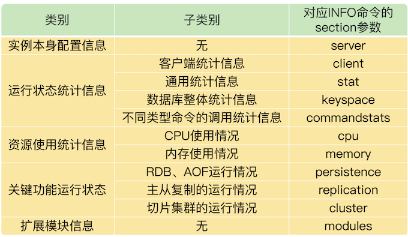
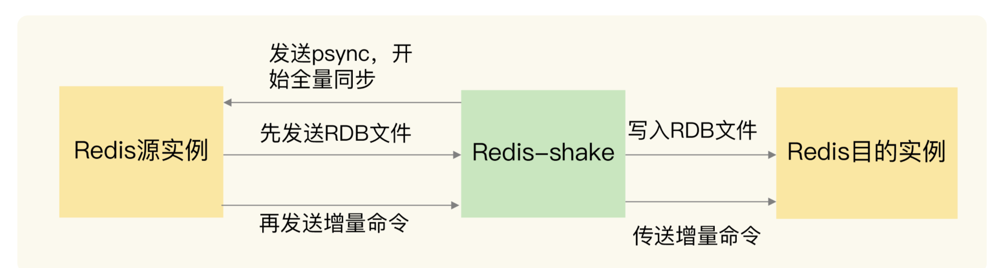

第四节 Redis运维工具
1、最基本的监控命令：INFO 命令
Redis 本身提供的 INFO 命令会返回丰富的实例运行监控信息，这个命令是 Redis 监控工具的基础。
Redis最基本的监控命令：INFO命令 对应INFO命令的section参数有： cpu、memory、stat、commandstat、server、client、repliation、cluster、modules等等
INFO 命令在使用时，可以带一个参数 section，这个参数的取值有好几种，相应的，INFO 命令也会返回不同类型的监控信息。
把 INFO 命令的返回信息分成 5 大类，其中，有的类别当中又包含了不同的监控内容，如下表所示：

在监控 Redis 运行状态时，INFO 命令返回的结果非常有用。
如果你想了解 INFO 命令的所有参数返回结果的详细含义，可以查看Redis官网的介绍。
几个运维时需要重点关注的参数以及它们的重要返回结果。
首先，无论你是运行单实例或是集群，我建议你重点关注一下 stat、commandstat、cpu 和 memory 这四个参数的返回结果
- 这里面包含了命令的执行情况（比如命令的执行次数和执行时间、命令使用的 CPU 资源）
- 内存资源的使用情况（比如内存已使用量、内存碎片率）
- CPU 资源使用情况等
当你启用 RDB 或 AOF 功能时，你就需要重点关注下 persistence 参数的返回结果，你可以通过它查看到 RDB 或者 AOF 的执行情况。
如果你在使用主从集群，就要重点关注下 replication 参数的返回结果，这里面包含了主从同步的实时状态。
不过，INFO 命令只是提供了文本形式的监控结果，并没有可视化，所以，在实际应用中，还可以使用一些第三方开源工具，将 INFO 命令的返回结果可视化。
2、面向 Prometheus 的 Redis-exporter 监控
Prometheus是一套开源的系统监控报警框架。它的核心功能是从被监控系统中拉取监控数据，结合Grafana工具，进行可视化展示。而且，监控数据可以保存到时序数据库中，以便运维人员进行历史查询。同时，Prometheus 会检测系统的监控指标是否超过了预设的阈值，一旦超过阈值，Prometheus 就会触发报警。
对于系统的日常运维管理来说，这些功能是非常重要的。而 Prometheus 已经实现了使用这些功能的工具框架。我们只要能从被监控系统中获取到监控数据，就可以用 Prometheus 来实现运维监控。
Prometheus 正好提供了插件功能来实现对一个系统的监控，我们把插件称为 exporter，每一个 exporter 实际是一个采集监控数据的组件。exporter 采集的数据格式符合 Prometheus 的要求，Prometheus 获取这些数据后，就可以进行展示和保存了。
Redis-exporter就是用来监控 Redis 的，它将 INFO 命令监控到的运行状态和各种统计信息提供给 Prometheus，从而进行可视化展示和报警设置。目前，Redis-exporter 可以支持 Redis 2.0 至 6.0 版本，适用范围比较广。
除了获取 Redis 实例的运行状态，Redis-exporter 还可以监控键值对的大小和集合类型数据的元素个数，这个可以在运行 Redis-exporter 时，使用 check-keys 的命令行选项来实现。
我们可以开发一个 Lua 脚本，定制化采集所需监控的数据。然后，我们使用 scripts 命令行选项，让 Redis-exporter 运行这个特定的脚本，从而可以满足业务层的多样化监控需求。
- Redis down
- Missing backup
- Out of memory
- Replication broken
- Too many connections
- Not enough connections
- Not enough connections
最后，我还想再给你分享两个小工具：redis-stat和Redis Live。跟 Redis-exporter 相比，这两个都是轻量级的监控工具。它们分别是用 Ruby 和 Python 开发的，也是将 INFO 命令提供的实例运行状态信息可视化展示。虽然这两个工具目前已经很少更新了.
3、数据迁移工具 Redis-shake
有时候，我们需要在不同的实例间迁移数据。目前，比较常用的一个数据迁移工具是Redis-shake，这是阿里云 Redis 和 MongoDB 团队开发的一个用于 Redis 数据同步的工具。
Redis-shake 的基本运行原理，是先启动 Redis-shake 进程，这个进程模拟了一个 Redis 实例。然后，Redis-shake 进程和数据迁出的源实例进行数据的全量同步。
- 源实例相当于主库，Redis-shake 相当于从库，源实例先把 RDB 文件传输给 Redis-shake
- Redis-shake 会把 RDB 文件发送给目的实例。
- 接着，源实例会再把增量命令发送给 Redis-shake，Redis-shake 负责把这些增量命令再同步给目的实例。
Redis-shake 进行数据迁移的过程：

Redis-shake 的一大优势，就是支持多种类型的迁移。
- 首先，它既支持单个实例间的数据迁移，也支持集群到集群间的数据迁移。
- 其次，有的 Redis 切片集群（例如 Codis）会使用 proxy 接收请求操作，Redis-shake 也同样支持和 proxy 进行数据迁移。
- 另外，因为
Redis-shake是阿里云团队开发的，所以，除了支持开源的 Redis 版本以外，Redis-shake 还支持云下的 Redis 实例和云上的 Redis 实例进行迁移，可以帮助我们实现 Redis 服务上云的目标。
在数据迁移后，我们通常需要对比源实例和目的实例中的数据是否一致。如果有不一致的数据，我们需要把它们找出来，从目的实例中剔除，或者是再次迁移这些不一致的数据。
这里，我就要再给你介绍一个数据一致性比对的工具了，就是阿里云团队开发的Redis-full-check。
Redis-full-check 的工作原理很简单，就是对源实例和目的实例中的数据进行全量比对，从而完成数据校验。不过，为了降低数据校验的比对开销，Redis-full-check 采用了多轮比较的方法。
- 在第一轮校验时，
Redis-full-check会找出在源实例上的所有key，然后从源实例和目的实例中把相应的值也都查找出来，进行比对。 - 第一次比对后，
redis-full-check会把目的实例中和源实例不一致的数据，记录到 sqlite 数据库中。 - 从第二轮校验开始，
Redis-full-check只比较上一轮结束后记录在数据库中的不一致的数据。
为了避免对实例的正常请求处理造成影响，Redis-full-check 在每一轮比对结束后，会暂停一段时间。随着 Redis-shake 增量同步的进行，源实例和目的实例中的不一致数据也会逐步减少，所以，我们校验比对的轮数不用很多。
我们可以自己设置比对的轮数。具体的方法是，在运行 redis-full-check 命令时，把参数 comparetimes 的值设置为我们想要比对的轮数。
等到所有轮数都比对完成后，数据库中记录的数据就是源实例和目的实例最终的差异结果了。
这里有个地方需要注意下，Redis-full-check 提供了三种比对模式，我们可以通过 comparemode 参数进行设置。comparemode 参数有三种取值，含义如下：
- KeyOutline，只对比 key 值是否相等；
- ValueOutline，只对比 value 值的长度是否相等；
- FullValue，对比 key 值、value 长度、value 值是否相等。
我们在应用 Redis-full-check 时，可以根据业务对数据一致性程度的要求，选择相应的比对模式。如果一致性要求高，就把 comparemode 参数设置为 FullValue。
4、集群管理工具 CacheCloud
CacheCloud是搜狐开发的一个面向 Redis 运维管理的云平台，它实现了主从集群、哨兵集群和 Redis Cluster 的自动部署和管理，用户可以直接在平台的管理界面上进行操作。
针对常见的集群运维需求，CacheCloud 提供了 5 个运维操作。
- 下线实例：关闭实例以及实例相关的监控任务。
- 上线实例：重新启动已下线的实例，并进行监控。
- 添加从节点：在主从集群中给主节点添加一个从节点。
- 故障切换：手动完成 Redis Cluster 主从节点的故障转移。
- 配置管理：用户提交配置修改的工单后，管理员进行审核，并完成配置修改。
当然，作为运维管理平台，CacheCloud 除了提供运维操作以外，还提供了丰富的监控信息。
CacheCloud 不仅会收集 INFO 命令提供的实例实时运行状态信息，进行可视化展示，而且还会把实例运行状态信息保存下来，例如内存使用情况、客户端连接数、键值对数据量。这样一来，当 Redis 运行发生问题时，运维人员可以查询保存的历史记录，并结合当时的运行状态信息进行分析。
5、本节小结
Redis 的 INFO 命令，这个命令是监控工具的基础，监控工具都会基于 INFO 命令提供的信息进行二次加工。我们还学习了 3 种用来监控 Redis 实时运行状态的运维工具，分别是 Redis-exporter、redis-stat和 Redis Live。
关于数据迁移，我们既可以使用 Redis-shake 工具，也可以通过 RDB 文件或是 AOF 文件进行迁移。
Redis INFO 信息看似简单，但是这些信息记录着 Redis 运行时的各种状态数据，如果我们把这些数据采集到并监控到位，80% 的异常情况能在第一时间发现。
机器的 CPU、内存、网络、磁盘，都影响着 Redis 的性能。
监控时我们最好重点关注以下指标：
- 客户端相关：当前连接数、总连接数、输入缓冲大小、OPS
- CPU相关：主进程 CPU 使用率、子进程 CPU 使用率
- 内存相关：当前内存、峰值内存、内存碎片率
- 网络相关：输入、输出网络流量
- 持久化相关：最后一次 RDB 时间、RDB fork 耗时、最后一次 AOF rewrite 时间、AOF rewrite 耗时
- key 相关：过期 key 数量、淘汰 key 数量、key 命中率
- 复制相关：主从节点复制偏移量、主库复制缓冲区